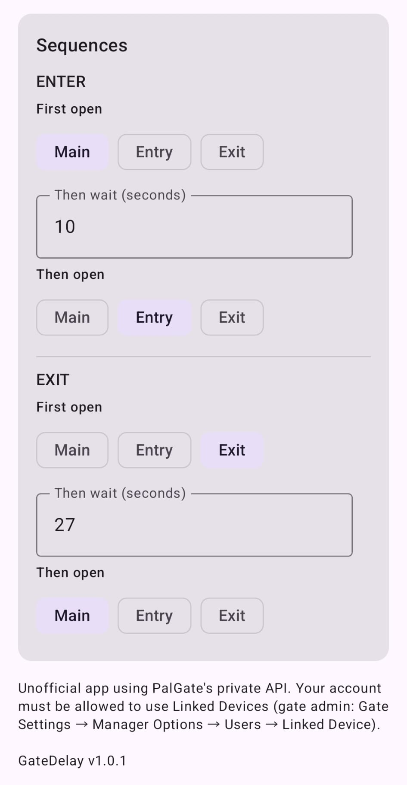

GateDelay – מדריך התקנה והגדרה
פתיחה מדורגת של שערי החניון באמצעות PalGate | Android
0. לפני שמתחילים
- מנהל השער צריך לאשר לכם מכשיר מקושר:
Gate Settings → Manager Options → Users → Linked Device
- בחשבון PalGate שלכם צריך להיות מקום פנוי למכשיר מקושר (בדרך כלל עד 2). GateDelay תופסת מקום אחד.
- לקישור החשבון תצטרכו מסך נוסף (מחשב, טאבלט או טלפון אחר) כדי להציג עליו קוד QR.
1. התקנת האפליקציה
- הורידו את הקובץ GateDelay-X.Y.Z.apk מדף הגרסאות:
github.com/Moran296/GateDelay/releases/latest
אפשר גם לקבל את הקובץ ממי שכבר מתקין אותו, אבל רק ממקור שאתם סומכים עליו.
- פתחו את הקובץ בטלפון ואשרו התקנה ממקור לא ידוע.
- אם Play Protect מציג אזהרה, זה רגיל לאפליקציה שלא הותקנה מחנות Play. בחרו התקן בכל זאת.
- עדכון: מתקינים את הגרסה החדשה מעל הקיימת. החשבון וההגדרות נשמרים ואין צורך לקשר מחדש. הגרסה המותקנת מופיעה בתחתית מסך ההגדרות.
2. קישור חשבון PalGate
- ב־GateDelay פתחו את ההגדרות (⚙) ולחצו Link account.
- לחצו Show on another screen (share QR), ושלחו את התמונה למחשב או לטלפון נוסף כדי להציג אותה שם.
- בטלפון שלכם פתחו את PalGate: הגדרות ← יחידות מקושרות ← קישור יחידה.
- סרקו את הקוד מהמסך השני. חזרו ל־GateDelay והמתינו עד שהחשבון יופיע ברשימה.
- אחרי הקישור מחקו את תמונת הקוד. הקוד פרטי: מי שסורק אותו לפני כן יכול לקבל גישה לחשבון.
אם הקישור נכשל, מחקו ב־PalGate את הקישור החדש שנוצר כדי לפנות את המקום, ונסו שוב.
3. בחירת השערים

- בהגדרות, תחת Gates, לחצו Choose ליד כל שער ובחרו אותו מהרשימה:
- Main: השער החיצוני (המחסום).
- Entry: שער הכניסה הפנימי.
- Exit: שער היציאה הפנימי.
- לחצו Test ליד כל שער וודאו שהשער הנכון נפתח.
- אם השערים לא מופיעים ברשימה, לחצו Refresh.
4. הגדרת רצף השערים

- תחת Sequences בחרו לכל רצף את השער הראשון (First open), את זמן ההמתנה בשניות (Then wait) ואת השער השני (Then open).
- כניסה (ENTER): Main ← 10 שניות ← Entry.
- יציאה (EXIT): Exit ← 27 שניות ← Main.
- התאימו את זמני ההמתנה למרחק בין השערים ולזמן הנסיעה ביניהם.
5. כפתורים במסך הבית (וידג'טים)

- לחצו לחיצה ארוכה על מסך הבית ← וידג'טים ← GateDelay.
- גררו למסך את ENTER (כחול) ואת EXIT (כתום).
- לחיצה על וידג'ט מפעילה את הרצף בלי לפתוח את האפליקציה. מתחת לשם מופיע המצב, למשל ספירה לאחור עד השער השני.
- אפשר גם ללחוץ לחיצה ארוכה על סמל האפליקציה ולבחור ENTER, EXIT או פתיחה של שער בודד.
6. שימוש יומיומי
- במסך הראשי לחצו ENTER או EXIT. השער הראשון נפתח, ואחרי ספירה לאחור נפתח השער השני.
- Open now פותח את השער השני מיד, ו־Cancel מבטל את הרצף. אותם כפתורים מופיעים גם בהתראה.
- הרצף ממשיך לרוץ גם כשהמסך כבוי או כשעוברים לאפליקציה אחרת.
- הכפתורים הקטנים Main, Entry ו־Exit פותחים שער אחד בלבד.
- אם השער הראשון לא נפתח, השער השני לא ייפתח.
7. הגדרות מומלצות בסמסונג
- הגדרות ← חיבורים ← Wi-Fi ← Intelligent Wi-Fi: הפעילו "עבור לנתונים ניידים".
- הגדרות ← יישומים ← GateDelay ← סוללה: בחרו "ללא הגבלה".
- אופציונלי: אפשרויות למפתחים ← Mobile data always active. זה יכול לקצר את העיכוב במעבר בין רשתות, אבל עלול לצרוך יותר סוללה.
8. בדיקת תקינות
- ודאו שכל אחד מהשערים נפתח בנפרד באמצעות PalGate.
- ודאו שהחשבון מופיע ב־GateDelay ושלחיצה על Test פותחת את השער הנכון.
- בדקו את הרצף בפעם הראשונה כשהרכב עומד במקום בטוח.
- בדקו גם עם חיבור סלולרי בלבד ועם מסך כבוי.
9. פתרון תקלות
- הקישור נכשל: בדקו את החיבור לאינטרנט, ושמנהל השער אישר לכם מכשיר מקושר (שלב 0). צרו קוד QR חדש ונסו שוב.
- מופיעה ההודעה "Linked Device" או "not authorized": מנהל השער לא אישר לכם מכשיר מקושר באותו שער.
- אין קליטה בין השערים: האפליקציה מנסה שוב כל 2 שניות במשך עד 60 שניות, ומציגה "retrying". אם זה קורה הרבה, ראו שלב 7.
- השער השני מתעכב: בדקו את המעבר בין Wi-Fi לסלולר, את הגבלות הסוללה ואת זמן ההמתנה.
- השער השני לא נפתח: בדקו את סדר השערים ברצף, את ההרשאות ואת החיבור לאינטרנט.
הערת אבטחה: GateDelay אינה אפליקציה רשמית של PalGate. התקינו אותה רק ממקור שאתם סומכים עליו, ואל תשתפו את קוד הקישור עם אחרים. פרטי הגישה נשמרים מוצפנים בטלפון בלבד.
קוד מקור: https://github.com/Moran296/GateDelay